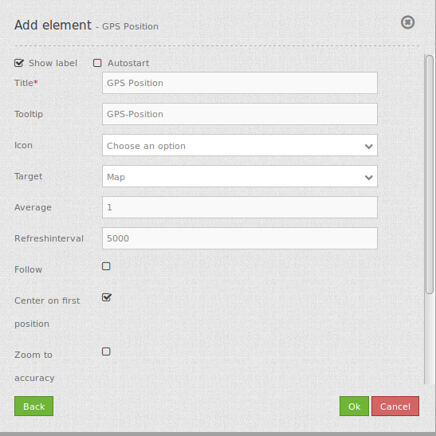

GPS-Position¶
This element provides a button to navigate to your current position and display a symbol at that position. The scale will not be changed until you activate zoom to accuracy (zoom to accuracy on first position).
The function is built upon the Geolocation-API by the W3C. To validate that your browser supports this functionality please take a look at the Can I Use page. The function uses the High Accurcacy Parameter that forces the positioning via GPS. If your device is shipped with a GPS-receiver and if it is activated the positioning is more accurate. Otherwise the WIFI access-points are used for positioning.
The midpoint shows the probable position of the device, the outer circle the accuracy of the positioning, that means the region where the position is probably to find.
Compatibility: Internet Explorer and MS Edge devliver without a GPS-reciever at the machine imprecise informationen. This behaviour is also observable with other applications.

Configuration¶
{kind=link}
- Show label: Switches the button label on/off.
- Autostart: true/false, default is false.
- Title: Title of the element.
- Tooltip: The text entered as a tool tip will be indicated by hovering over the element with the mouse cursor a longer time.
- Icon: icon to display on button.
- Target: Id of Map element, activated after the click.
- Average: calculates the average of the last at parameter average defined amount of received GPS coordinates, default 1.
- Refreshinterval: refresh interval in ms, default is 5000 ms.
- Follow: default false, true refreshes the map for every received GPS position received, only use with WMS in tiled mode.
- Center on first position: center map only on first received GPS position.
- Zoom to accuracy: zoom map according to received GPS position accuracy.
- Zoom to accuracy on first position: Zoom map according to first received gps position accuracy.
YAML-Definition:¶
The element is placed as a button into the toolbar.
class: Mapbender\CoreBundle\Element\GpsPosition
label: true # true/false to label button, default is true
autoStart: false # true/false, default is false
title: GPS-Position # title of the button
tooltip: GPS-Position # text to use as tool tip
icon: gpsposition # icon to display on button
target: map # Id of Map element to query
average: 1 # calculates the average of the last at parameter average defined amount of received GPS coordinates, default 1
refreshinterval: 5000 # refresh interval in ms, default is 5000 ms
follow: true # default false, true refreshes the map for every received GPS position received, only use with WMS in tiled mode
centerOnFirstPosition: true # center map only on first received gps position
zoomToAccuracy: false # zoom map according to received gps position accuracy
zoomToAccuracyOnFirstPosition: true # zoom map according to first received gps position accuracy
Class, Widget & Style¶
- Class: Mapbender\CoreBundle\Element\GpsPosition
- Widget: mapbender.element.gpsPostion.js
- Style: mapbender.element.gpsPosition.css
HTTP Callbacks¶
None.
JavaScript API¶
None.
JavaScript Signals¶
None.